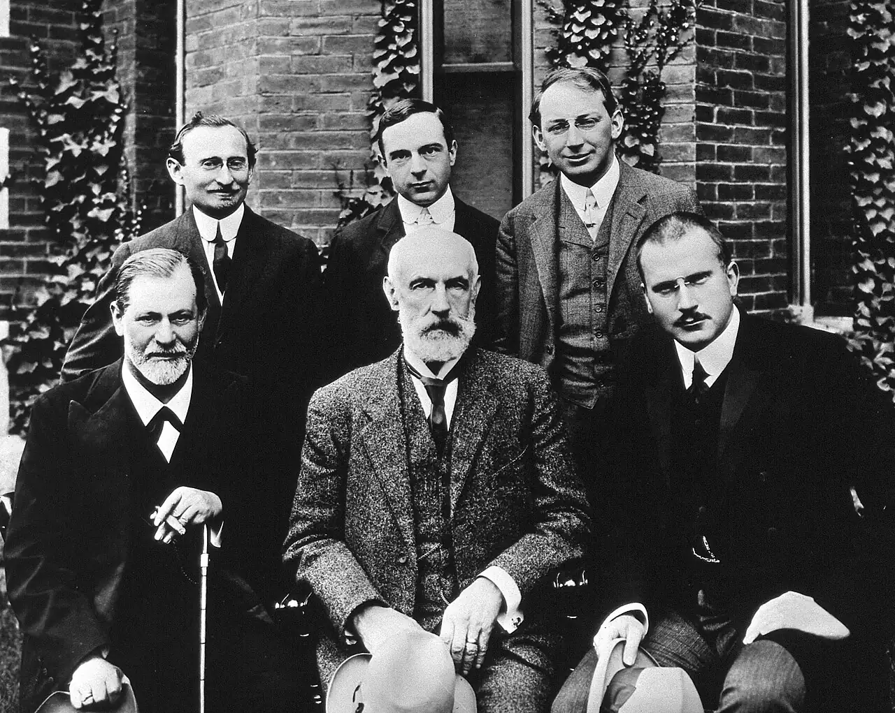

Comprender la mente. Entender la vida.
Historia, ciencia y preguntas cotidianas. Descubre a sus protagonistas, comprende cómo funcionan la memoria, las emociones o las relaciones, y aprende jugando.

Descubrir, comprender, participar
Historias e ideas
Conceptos y vida diaria
¿Qué te gustaría comprender?
Una organización inspirada en las materias universitarias, explicada para todos.
 Procesos básicos
Procesos básicosPercepción
Cómo los sentidos y el cerebro convierten estímulos en un mundo con objetos, distancias y significado. Incluye ilusiones, reconocimiento de caras y experiencia perceptiva.
Leer → Procesos básicos
Procesos básicosAtención
Por qué no podemos procesarlo todo a la vez: selección, distracción, concentración sostenida y lo que pasa cuando hacemos dos tareas a la vez.
Leer → Procesos básicos
Procesos básicosAprendizaje
Cómo cambia la conducta con la experiencia: condicionamiento, aprendizaje por observación, práctica deliberada y adquisición de habilidades.
Leer → Procesos básicos
Procesos básicosMemoria
Cómo guardamos, conservamos y recuperamos la información, por qué olvidamos y por qué a veces recordamos cosas que no ocurrieron así.
Leer → Procesos básicos
Procesos básicosPensamiento
Razonamiento, resolución de problemas, toma de decisiones, creencias y los atajos mentales que a veces nos llevan a error.
Leer → Procesos básicos
Procesos básicosLenguaje
Cómo aprendemos a hablar, cómo comprendemos y producimos frases, la comunicación no verbal y el bilingüismo.
Leer → Procesos básicos
Procesos básicosMotivación
Qué nos mueve a actuar: metas, incentivos, persistencia, hábitos y autorregulación.
Leer → Procesos básicos
Procesos básicosEmoción
Qué son las emociones, cómo se expresan, qué papel tiene el contexto y cómo las regulamos.
Leer → Persona y desarrollo
Persona y desarrolloPersonalidad
Rasgos, temperamento, identidad y autoconcepto: lo que es relativamente estable en cada persona y lo que cambia.
Leer → Persona y desarrollo
Persona y desarrolloInteligencia y creatividad
Modelos de inteligencia, cómo se evalúa, qué es la creatividad y por qué estos temas siguen generando debate.
Leer → Procesos básicos
Procesos básicosPsicobiología
Bases biológicas de la conducta: sistema nervioso, hormonas, genética y ambiente, evolución.
Leer → Procesos básicos
Procesos básicosNeuropsicología
Qué nos enseñan las lesiones y el funcionamiento cerebral sobre la memoria, el lenguaje, la atención y la conducta.
Leer → Persona y desarrollo
Persona y desarrolloDesarrollo
Cambios y continuidades a lo largo de toda la vida, desde el nacimiento hasta la vejez.
Leer → Relaciones
RelacionesPsicología social
Cómo nos influyen los demás: identidad, actitudes, prejuicios, cooperación, conformidad y grupos.
Leer → Métodos
MétodosMétodos y estadística
Cómo se investiga en psicología: diseños, muestras, incertidumbre, correlación y causalidad, replicación.
Leer → Métodos
MétodosPsicometría y evaluación
Cómo se mide en psicología: fiabilidad, validez, baremos, entrevista e interpretación responsable de resultados.
Leer → Procesos básicos
Procesos básicosConciencia y sueño
Qué es estar consciente, por qué dormimos y soñamos, y qué ocurre con la anestesia, la hipnosis o la meditación.
Leer → Procesos básicos
Procesos básicosPsicología comparada
Qué piensan y sienten otros animales, y qué nos enseña compararlos con nosotros.
Leer → Persona y desarrollo
Persona y desarrolloPsicopatología
Cómo se define, clasifica y explica el sufrimiento psicológico, y dónde están los límites con la normalidad.
Leer → Persona y desarrollo
Persona y desarrolloEnvejecimiento
Qué cambia y qué se mantiene en la mente con los años, y qué ayuda a envejecer bien.
Leer →Persona y desarrolloBienestar y felicidad
Qué sabemos de la felicidad, cómo se mide y qué factores la favorecen.
Leer → Relaciones
RelacionesRelaciones y apego
Por qué necesitamos a los demás, cómo elegimos pareja y qué hace que una relación funcione.
Leer → Relaciones
RelacionesCultura y mente
Cómo la cultura moldea la forma de percibir, sentir, pensar y entenderse a uno mismo.
Leer → Relaciones
RelacionesSalud y conducta
Cómo influyen el estrés, los hábitos y las creencias en la salud física, y cómo se cambian conductas.
Leer →De dónde vienen nuestras ideas
Un recorrido por cambios, escuelas, descubrimientos y debates, sin presentar la disciplina como una sucesión de genios aislados.

Las preguntas iniciales
Filosofía, medicina y tradiciones culturales sobre la mente y la conducta.

Medir la experiencia
Psicofísica, fisiología y nacimiento de la psicología experimental.

El laboratorio de Leipzig
Un hito institucional asociado a Wilhelm Wundt, dentro de una historia más amplia.

Escuelas en diálogo
Psicoanálisis, conductismo, Gestalt y primeros instrumentos de evaluación.
La mente vuelve al centro
Psicología cognitiva, humanismo, enfoques sistémicos y expansión profesional.

Una ciencia conectada
Neurociencia, diversidad cultural, ciencia abierta y psicología digital.
Personas que abrieron caminos
Preguntas cotidianas, nuevas perspectivas
Cada artículo conecta una situación diaria con las bases académicas.
 Hábitos
Hábitos¿Por qué dejo las cosas para mañana?
La procrastinación no es simple pereza: tiene mucho que ver con cómo gestionamos las emociones que nos provoca una tarea.
Leer → Emociones
Emociones¿Por qué damos vueltas a una preocupación?
Preocuparse puede ayudar a anticipar problemas, pero también puede convertirse en un círculo que no resuelve nada.
Leer →ParejaDiscutir sin perder el diálogo
Las parejas discuten. Lo que la investigación observa no es si discuten, sino cómo lo hacen y cómo reparan después.
Leer → Estudio
Estudio¿Estudiar más o estudiar mejor?
Releer y subrayar parecen eficaces, pero no lo son tanto. Dos estrategias con mucho respaldo: ponerse a prueba y repartir el estudio.
Leer → Vida digital
Vida digitalNuestra atención en un mundo de pantallas
Cambiar de tarea tiene un coste. Qué se sabe sobre interrupciones, notificaciones y multitarea, y qué está todavía en discusión.
Leer → Ciclo vital
Ciclo vitalAdolescencia: autonomía y vínculos
Más que una etapa de rebeldía, la adolescencia es un periodo de aprendizaje social intenso, con un cerebro y un sueño que cambian.
Leer →Emociones¿Por qué me enfado por tonterías?
A veces la chispa es pequeña, pero el combustible llevaba horas acumulándose: hambre, sueño, prisa o preocupaciones.
Leer →Emociones¿Para qué sirve la tristeza?
Nadie quiere estar triste, pero la tristeza cumple funciones útiles. Distinguirla de la depresión es importante.
Leer →Emociones¿Por qué siento ansiedad sin motivo aparente?
A veces la ansiedad aparece de la nada. Entender cómo se alimenta a sí misma ayuda a que pierda fuerza.
Leer →Emociones¿Es malo aburrirse?
El aburrimiento es incómodo, pero es una señal útil: avisa de que lo que hacemos no nos llena.
Leer →Autoestima e identidad¿Por qué me comparo tanto con los demás?
Compararse es casi inevitable: es una de las formas en que sabemos cómo nos va. El problema es con quién y con qué.
Leer →Autoestima e identidadAutocompasión: tratarse como a un buen amigo
Ser duro con uno mismo no suele motivar más. Tratarse con amabilidad ante los errores ayuda a mejorar.
Leer →Autoestima e identidad¿Por qué me cuesta tanto decir que no?
Por miedo a decepcionar, aceptamos cosas que no queremos. Decir que no con respeto es una habilidad que se aprende.
Leer →Autoestima e identidadPerfeccionismo: cuando nada es suficiente
Querer hacer las cosas bien es positivo. Exigirse la perfección y castigarse por cada fallo tiene costes.
Leer →Pareja¿Se puede mantener la pasión en una pareja larga?
El enamoramiento intenso suele calmarse, pero algunas parejas mantienen un amor romántico vivo durante décadas.
Leer →ParejaCelos: ¿cuándo dejan de ser normales?
Sentir celos alguna vez es humano. Controlar, vigilar o aislar a la pareja no lo es.
Leer →ParejaCómo superar una ruptura
Una ruptura duele de verdad, pero la mayoría de las personas se recupera, y algunas salen con una idea más clara de sí mismas.
Leer →Familia¿Por qué discuten tanto los hermanos?
Las peleas entre hermanos son normales y pueden enseñar a negociar. Lo que más las empeora es sentir que hay trato desigual.
Leer →FamiliaRabietas: qué hacer cuando un niño explota
Las rabietas son normales entre el año y los cuatro años. Mantener la calma y no ceder al grito es lo que más ayuda.
Leer →FamiliaCuidar de un familiar mayor sin perderse en el intento
Cuidar a un padre o una madre dependiente es un acto de cariño y también una carga. Cuidar al cuidador no es egoísmo.
Leer →Familia¿Influye el orden de nacimiento en la personalidad?
El mayor responsable, el mediano olvidado, el pequeño rebelde… Los grandes estudios apenas encuentran diferencias.
Leer →Amistad y vida social¿Por qué cuesta tanto hacer amigos de adulto?
En el colegio, la amistad surgía casi sola. De adultos falta lo que más la alimenta: tiempo compartido y encuentros repetidos.
Leer →Amistad y vida socialTimidez y ansiedad social: cuando los demás dan miedo
Ser tímido es un rasgo; la ansiedad social limita la vida. Creemos que los demás nos observan mucho más de lo que lo hacen.
Leer →Amistad y vida socialCómo apoyar a alguien que lo está pasando mal
A menudo no hace falta tener la frase perfecta. Escuchar, validar y ofrecer ayuda concreta suele valer más que los consejos.
Leer →Amistad y vida social¿Merece la pena hablar con desconocidos?
Pensamos que será incómodo y que la otra persona no querrá. Los experimentos muestran que ambos salimos ganando.
Leer →Hábitos¿Por qué fallan los propósitos de Año Nuevo?
No es falta de voluntad. La forma de plantear el objetivo influye mucho en que se cumpla.
Leer →Hábitos¿De verdad el ejercicio mejora el ánimo?
Sí, y no hace falta correr maratones. Caminar a buen ritmo o hacer yoga ya tiene efectos medibles.
Leer →HábitosMorderse las uñas y otras manías difíciles de dejar
Morderse las uñas, arrancarse pelos o pellizcarse la piel suelen ser automáticos. Una técnica sencilla ayuda a cortarlos.
Leer →Hábitos¿Por qué comemos sin tener hambre?
Comer por aburrimiento, estrés o tristeza es muy común. Las dietas muy estrictas a veces lo empeoran.
Leer →EstudioLos nervios antes de un examen
Algo de nervios ayuda a rendir. Cuando bloquean, dos técnicas sencillas han mostrado efecto: reinterpretarlos y escribir sobre ellos.
Leer →Estudio¿Ayuda estudiar con música?
Depende de la tarea y de la música. Las canciones con letra suelen perjudicar la lectura; la música suave a veces no molesta.
Leer →Estudio¿Es demasiado tarde para aprender un idioma de adulto?
Los niños tienen ventaja para sonar nativos, pero los adultos aprenden rápido al principio y pueden llegar a un nivel muy alto.
Leer →TrabajoHablar en público sin morir de miedo
Es uno de los miedos más comunes. Saber que los nervios se notan menos de lo que creemos ya ayuda.
Leer →TrabajoTeletrabajo: ventajas y trampas
Ahorra desplazamientos y da flexibilidad, pero puede aislar y difuminar los límites entre trabajo y vida. El modelo híbrido sale bien parado.
Leer →Trabajo¿Por qué me cuesta desconectar del trabajo?
Seguir pensando en el trabajo al llegar a casa impide recuperarse. Desconectar no es pereza: es parte del rendimiento.
Leer →TrabajoSeñales de que el trabajo te está quemando
Agotamiento, cinismo y sensación de no servir para nada. Detectarlo pronto permite actuar antes de caer.
Leer →Sueño¿Cuántas horas hay que dormir?
Los adultos necesitan entre siete y nueve horas, pero importa tanto la regularidad como la cantidad.
Leer →SueñoMe despierto de madrugada y no puedo volver a dormir
Despertarse por la noche es normal. Lo que alarga la vigilia es la preocupación por no dormir.
Leer →Sueño¿Es buena la siesta?
Una siesta corta mejora la alerta y el ánimo. Las largas pueden dejar aturdido y quitar sueño por la noche.
Leer →Sueño¿Por qué tengo pesadillas tan a menudo?
El estrés y los traumas las aumentan. Una técnica sencilla, reescribir el sueño despierto, las reduce.
Leer →SexualidadNo tengo ganas de sexo: ¿me pasa algo?
El deseo no siempre aparece de golpe. En muchas personas surge después de empezar, como respuesta a la intimidad.
Leer →Sexualidad¿Cómo hablar de sexo con los hijos?
Mejor pronto, poco a poco y con naturalidad. Hablar de ello no adelanta las relaciones sexuales, sino que las hace más seguras.
Leer →Pérdidas y transiciones¿El duelo tiene fases?
Las cinco fases son una idea popular pero poco exacta. La mayoría de las personas sobrellevan la pérdida mejor de lo que esperan.
Leer →Pérdidas y transicionesLa jubilación: ¿descanso o vacío?
La mayoría se adapta bien, pero no todos igual. Quien se jubila con planes y relaciones lo lleva mejor.
Leer →Pérdidas y transicionesEmigrar: el duelo de dejar tu país
Cambiar de país supone muchas pérdidas a la vez. Mantener lo propio y abrirse a lo nuevo suele ser lo que mejor funciona.
Leer →Pérdidas y transicionesEl nido vacío: cuando los hijos se van
La tristeza al principio es normal, pero muchos padres mejoran su bienestar y su relación de pareja tras la marcha.
Leer →Vida digital¿Las redes sociales nos hacen infelices?
El efecto medio es pequeño, pero no es igual para todos. Importa más cómo se usan que cuánto tiempo.
Leer →Vida digitalNo puedo dejar de leer malas noticias
Desplazarse sin fin por noticias angustiantes da sensación de control, pero aumenta el estrés. Limitarlo ayuda.
Leer →Vida digitalVideojuegos: ¿cuándo hay que preocuparse?
Jugar mucho no es una adicción. Lo que preocupa es perder el control y que el juego desplace todo lo demás.
Leer →DecisionesMe cuesta muchísimo decidirme
Tener muchas opciones puede paralizar. Conformarse con lo «suficientemente bueno» suele dar más satisfacción.
Leer →Decisiones¿Hay que fiarse de la intuición?
La intuición funciona bien en terrenos donde tienes mucha práctica y recibes respuesta rápida. Fuera de ellos, engaña.
Leer →Decisiones¿Por qué compro cosas que no necesito?
Las compras impulsivas responden a emociones y a un entorno diseñado para tentarnos. Pequeñas pausas ayudan mucho.
Leer →Decisiones¿De qué nos arrepentimos más?
A corto plazo, de lo que hicimos. A largo plazo, de lo que no nos atrevimos a hacer.
Leer →Cultura y sociedad¿Por qué nos creemos los bulos?
Más por despiste que por ingenuidad. Pararse a pensar si algo es cierto antes de compartir reduce mucho su difusión.
Leer →Cultura y sociedadEcoansiedad: la preocupación por el clima
Preocuparse por el cambio climático es una reacción razonable, no un trastorno. Actuar con otros ayuda a sobrellevarla.
Leer →Ciclo vital¿Existe la crisis de los 40?
El bienestar parece bajar algo en la mediana edad, pero la crisis dramática del tópico es poco frecuente.
Leer →Lo último, cada tres días
El efecto Stroop: cuando leer va más rápido que mirar
Una tarea sencilla, nombrar el color de la tinta, publicada en 1935, se ha convertido en uno de los resultados más sólidos de la psicología.
Leer →Mitos · ¿Los polos opuestos se atraen?
Es una idea muy repetida en películas y canciones, pero la investigación sobre la atracción y las parejas apunta casi siempre en la dirección contraria.
Leer → Vida cotidiana ·
Vida cotidiana · Black Friday: lo que la psicología sabe de la mente que compra
Escasez, cuentas atrás y precios tachados. Algunos mecanismos bien estudiados que explican por qué compramos más de lo que pensábamos, y cómo frenar a tiempo.
Leer →Conocerte empieza por hacerte preguntas
Actividades de reflexión y retos: no son pruebas clínicas ni miden el cociente intelectual.
ReflexiónTu forma de ser
Diez afirmaciones para pensar en cinco grandes dimensiones de la personalidad.
RazonamientoPon a prueba tu razonamiento
Ocho retos originales de lógica, patrones y problemas, con explicación.
ParejaConversar en pareja
Preguntas para hablar sobre escucha, acuerdos y proyectos. Sin porcentajes de compatibilidad.
La ciencia de los tests¿Qué puede decir un resultado?
Validez, fiabilidad y baremos, y por qué un cuestionario breve no define a nadie.
La curiosidad también enseña
Historias, ilusiones y experimentos contados con contexto: qué ocurrió, qué sabemos y qué se ha discutido después.
Tu percepción te sorprendeEl efecto Stroop: cuando leer estorba
Di en voz alta el color de la tinta, no la palabra. Parece fácil hasta que lo pruebas.
 Mitos que suenan científicos
Mitos que suenan científicos¿Escuchar a Mozart te hace más inteligente?
Cómo un estudio pequeño se convirtió en un fenómeno comercial, y qué dijeron las investigaciones posteriores.
Experimentos que cambiaron preguntasAsch y la presión del grupo: lo que se suele olvidar
El experimento de las líneas es famoso por la conformidad. Pero la mayoría de las respuestas fueron independientes.
Una puerta de entrada, sin conocimientos previos
Lección breve, ejemplo, actividad y comprobación.
Creada por un médico de familia
Alejandro Rosàs, médico de familia con más de 38 años de experiencia en atención primaria y especialista en Medicina Preventiva y Salud Pública. Colegiado en Barcelona, n.º 28574.
Aprender sin etiquetas fáciles
Conocer la evidencia, reconocer los límites y respetar la diversidad humana.